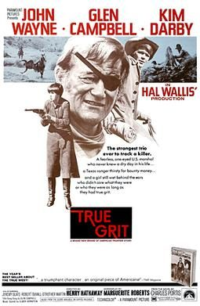

True Grit
Studio: Paramount Pictures
Starring: John Wayne, Glen Campbell, Kim Darby
Director: Henry Hathaway
Writer: Marguerite Roberts, Charles Portis
Producer: Hal B. Wallis
True Grit is a 1969 American Western film directed by Henry Hathaway and produced by Hal B. Wallis. Starring John Wayne as Deputy U.S. Marshal Reuben Rooster Cogburn and with Glen Campbell Texas Ranger and Kim Darby. The film is adapted by Marguerite Roberts from Charles Portis' 1968 novel of the same name.
Trivia
- Won the Academy Award for Best Actor.
- Selected for the National Board of Review: Top Ten Films.
- Based on True Grit (novel by Charles Portis).
- Mia Farrow was originally cast as Mattie and was keen on the role.
- Farrow quit the film, which was then offered to Michele Carey, Sondra Locke and Tuesday Weld, but all three were under contract for another film.
- John Wayne met Karen Carpenter at a talent show he was hosting and recommended her for the part, though the producers decided against it because she had no acting experience.
Filming Locations
- Colorado
- Ouray County
- The scenes that take place at the "dugout" and along the creek where Quincy and Moon are killed, as well as the scene where Rooster carries Mattie on her horse Little Blackie after the snakebite, were filmed at Hot Creek on the east side of the Sierra Nevada near the town of Mammoth Lakes, California.
Previous Showings
1 Run • 1 Festival
All runs on record (1):
- June 5, 2009John Waynew/ The Shootist